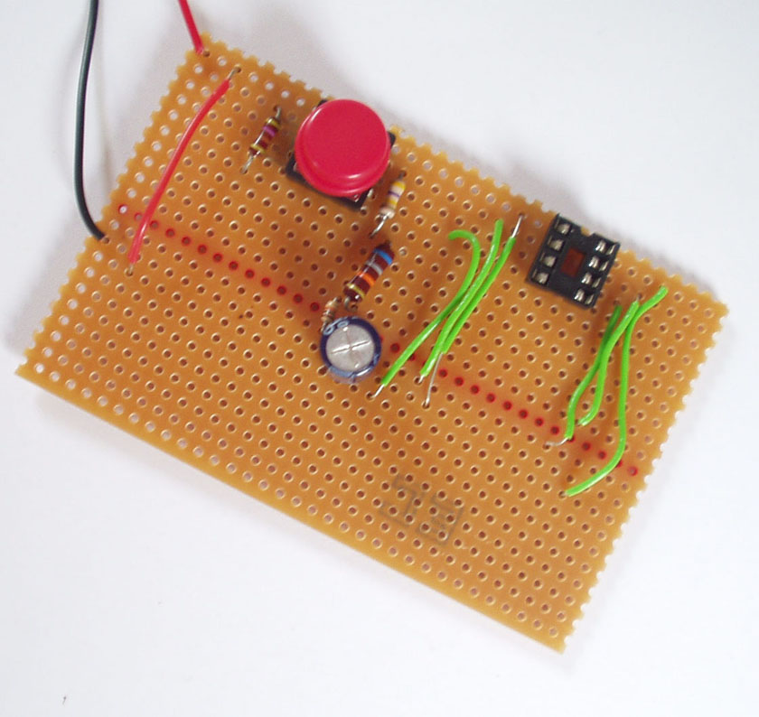
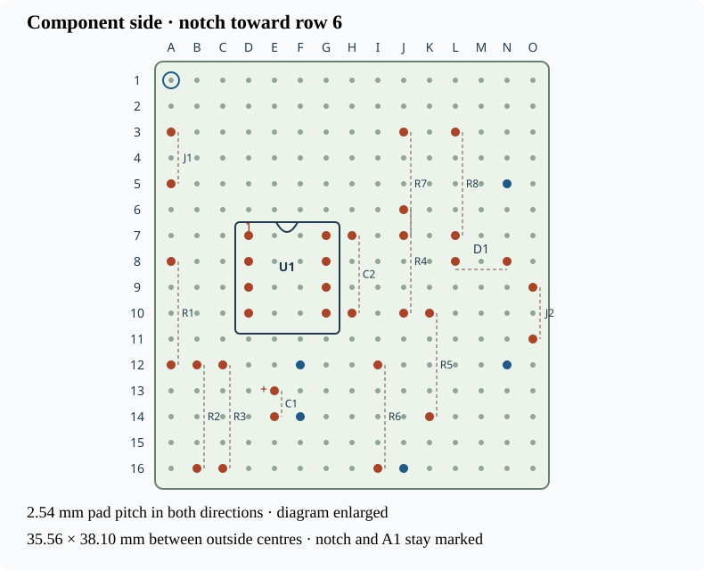
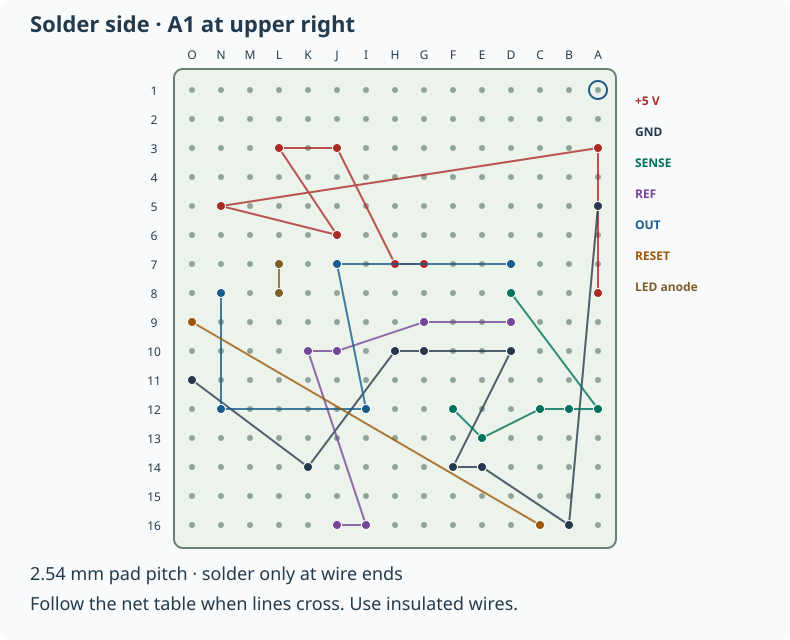

Solder your door indicator on a PCB
Transfer the working breadboard circuit to a through-hole prototype PCB. Solder the components and socket, install the board in a case, and prove the same readings before mounting it on a door.
Buy or reuse the assembly parts
Move the parts from P187 or use a second set to keep the working breadboard as a reference. Get the following additions. Tools are a temperature-controlled soldering iron, electronics solder and flux, cutter, wire stripper, workholder, multimeter, marker and drill for the plastic case. Work on a spare pad first. View iron and joint · Bill Earl, CC BY-SA 3.0, resized · P05 · Through-hole practice.

| Quantity and part | Specification | Australia | India |
|---|---|---|---|
| 1 · Pad-per-hole PCB View photo | 2.54 mm grid, individual isolated copper pads, at least 15 columns × 16 rows of usable holes. Use the board’s existing mounting holes where available. | Jaycar HP9550 · A$5.95 listed | Robu 70 × 90 mm double-sided board |
| 1 · DIP-8 socket View photo | 7.62 mm row spacing, 2.54 mm along each row. Solder the socket and fit the chip after cold checks. Raimond Spekking · CC BY-SA 4.0, resized. | element14 Australia · IC sockets | element14 India · IC sockets |
| 1 set · Jumper wire and housing View photo | About 1 m of insulated, tinned 26 AWG solid wire and 0.5 m of flexible 24–26 AWG two-core wire for the reed. One plastic case sized to your board plus 5 mm clearance at each edge. For the 95 × 72 mm board, allow at least 105 × 82 × 22 mm inside. Fit four ≥6 mm nylon standoffs and matching screws, and a grommet and clamp at each cable entry. | Use a local electronics shop or reuse a suitable enclosure. | Use a local electronics shop or reuse a suitable enclosure. Reference photo by Edwiyanto · CC BY-SA 4.0. Use bare tinned ends for soldering. |




Watch. Watch the tip touch the pad and lead together, and check what a soldered joint looks like from the copper side. Adafruit Industries · Collin's Lab: Soldering.
1 · Label the board and fit parts
With the component side up, mark columns A–O left to right and rows 1–16 top to bottom. Ignore any existing printed grid and choose a rectangle that keeps all mounting holes clear. The outside hole centres span 35.56 × 38.10 mm. Write “A1” on both faces near that corner. Turn the board over from left to right so row numbers stay in order and columns reverse on the solder side.


| Component | Holes viewed from the top | Orientation or job |
|---|---|---|
| U1 socket | Pin 1 D7, 2 D8, 3 D9, 4 D10, 5 G10, 6 G9, 7 G8, 8 G7 | Notch toward row 6. |
| R1, R2 · 68 kΩ each | A8–A12; B12–B16 | Either way. |
| R3 · 1 kΩ | C12–C16 | Reset current limit. |
| R4 · 27 kΩ; R5 · 10 kΩ | J6–J10; K10–K14 | Reference divider. |
| R6 · 330 kΩ; R7 · 10 kΩ | I12–I16; J3–J7 | Feedback; output pull-up. |
| R8 · 2.2 kΩ; D1 · red LED | L3–L7; L8 (anode)–N8 (cathode) | LED shorter lead or flat side is cathode. |
| C1 · 100 µF; C2 · 100 nF | E13 (+)–E14 (−); H7–H10 | C1 stripe to E14. C2 can be fitted either way. |
| J1 supply; J2 reed | A3 (+5 V), A5 (GND); O9 (RESET), O11 (GND) | Insulated flexible leads. Strain relief is on the housing. |
Place and solder resistors first, then the empty socket, capacitors, LED and input leads. Keep the socket flat against the board while tacking two opposite corners. Leave C1 high enough to read the stripe. Trim leads and inspect after each group.
2 · Make the copper connections
Each pad on this board starts electrically separate. Use insulated 26 AWG wire to join successive pairs in each row of the table. For example, G7 to H7, then H7 to J3. Use exposed wire only at the solder joint. At a shared pad, solder the two wire ends onto the joint or use a neighbouring spare pad as a soldered branch and verify it with the meter. Cross wires only where their insulation remains intact.


| Net | Join the pads in this order | Probe pad |
|---|---|---|
| +5 V | G7 → H7 → J3 → L3 → J6 → N5 → A3 → A8 | N5 |
| GND | A5 → B16 → E14 → F14 → D10 → G10 → H10 → K14 → O11 | F14 |
| SENSE | D8 → A12 → B12 → C12 → E13 → F12 | F12 |
| REF | D9 → G9 → J10 → K10 → I16 → J16 | J16 |
| OUT | D7 → J7 → I12 → N12 → N8 | N12 |
| RESET | C16 → O9 | O9 |
| LED anode | L7 → L8 | L8 |
Fit a short wire loop in each free probe pad N5, F14, F12, J16 and N12. The pad coordinates refer to the component side. Turn the board repeatedly as you work to identify the correct hole before soldering on the underside.
3 · Check the board before inserting the chip
- Leave the IC out and disconnect supply and reed. Use continuity to check every pair of pads in each net row. Probe from the socket pins to the test loops too. Check adjacent pads for accidental join. Use resistance mode if a connected resistor makes a continuity reading ambiguous.
- Verify +5 V to GND has no persistent low reading, and re-check C1, D1 and socket orientation. With the reed open and no IC, the reading can move while the meter charges C1. A reading that settles below 1 kΩ calls for inspection before power.
- Power without the chip. With black on F14, check socket pin 8 reads 4.75–5.25 V and socket pins 4 and 5 read below 0.1 V. Disconnect power. Wait for N5 and F12 to drop below 0.1 V, then fit the LM393 with its notch matching the socket.
- Connect the reed and use a 50 mA current limit for first power if available. Repeat the breadboard tests using the labelled loops. If a board reading differs, stop and measure OUT, REF and SENSE in that order. An output reading only tells you what the chip did. The two input readings explain why.
4 · Put the working board in the case
Dry-fit the board on four nylon standoffs with at least 6 mm clearance under the solder joints. Transfer the actual mounting-hole positions to the case with the board removed for drilling. Deburr the entries. Bring the LED to a clear lid or drill for the LED holder you bought. Clamp the USB power cable and reed cable inside so pulling on either cable cannot move the solder joint. Attach the fixed reed to the frame and the magnet to the door. Tape first, then fix them in place after the five-cycle test with the lid shut.
Keep a record. Save a top photo, a solder-side photo, the five timings and the supply, SENSE, REF, OUT readings before and after you close the box. Download the workshop record. To order a custom-made board for the same circuit later, use the verified layout and test points with P48 · Draw and lay out a PCB.
This build uses a bare PCB with isolated pads and hand-wired connections. The plan was checked against the schematic. A physical board still needs to pass the checks in this lesson.
Next · Build a mini building-management control panel